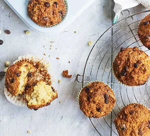

Chocolate Chip Muffins

Description
Make these easy chocolate chip muffins with kids over the weekend or school holidays. They take just 15 minutes prep and are a guaranteed family favourite
Ingredients
- 250g self-raising flour
- 150g chocolate chips
- 100g sugar
- 2 eggs, lightly beaten
- 150ml yogurt
- 100g unsalted butter, melted
Steps
- Heat oven to 200C/180C fan/gas 6 and line a 12-hole muffin tin with paper cases. Sift the flour and bicarbonate of soda into a large bowl, then stir in the chocolate chips and sugar. Add the beaten eggs, yogurt and butter, and stir to combine. It doesn’t matter if the mixture looks a bit lumpy, it’s more important not to overmix or the muffins will turn out tough.
- Fill the paper cases and bake for 20-25 mins until risen and golden brown. Transfer to a rack to cool – or eat slightly warm. Will keep for three days in an airtight container.